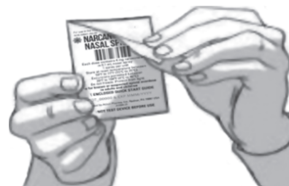
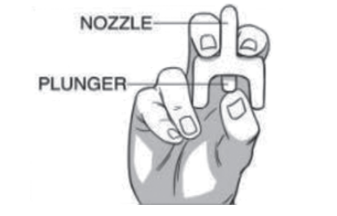
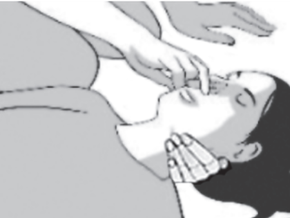
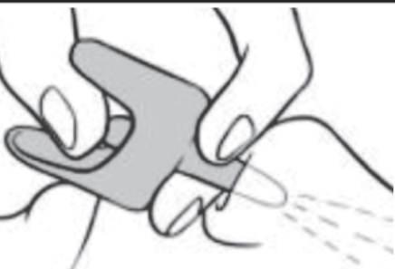
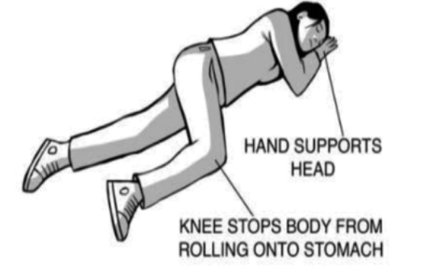

Background
The lifesaving medicine Naloxone, brand name Narcan, helps treat a narcotics overdose. An overdose occurs when a person ingests too many opiates, with excessive unopposed stimulation of the opiate pathway. Signs of an overdose include a pale and clammy face, a limp body, blue or purple lips or fingernails, vomiting, and slow breathing and heart rate. Naloxone will help an overdose by replacing the opiods from the receptors in the brain, allowing breathing to begin again.
Where to find Narcan
Narcan is an over the counter drug which can be found at most pharmacies. There are also several locations that may give out free Narcan, such as health departments, healthcare providers, syringe exchange programs, and universities.
How to administer
-
Take Narcan Nasal Spray out of the box and peel back the tab with the circle to open the Narcan Nasal Spray. IMPORTANT: Do not remove Narcan until ready to use and do NOT test the device.
 -
Hold the Narcan Nasal Spray with your thumb on the bottom of the plunger and your first and middle fingers on either side of the nozzle
 -
Tilt the person's head back and provide support under the neck with your hand.
 -
Gently insert the tip of the nozzle into one nostril, until your fingers on either side of the nozzle are against the bottom of the person’s nose. Press the plunger firmly to give the dose of Narcan Nasal Spray. Remove the Narcan Nasal Spray from the nostril after giving the dose.
 -
Wait and watch the person closely. If the person does not respond in 2 minutes, repeat the steps and give the second dose of Narcan Nasal Spray in the box.
-
Call 911 right away, if you have not done so already. Roll the person on their side and place them in the 'recovery position'.

After administering
Narcan can reverse the effects of an overdose but is not a permanent solution. Immediately after administering Narcan to a patient, ensure they receive proper medical care within 30 minutes if administering or they may revert into an overdose state again.
Common errors
Narcan will only help fix a narcotics (opioid) overdose, and cannot help with an overdose from other drugs such as methamphetamine or cocaine.